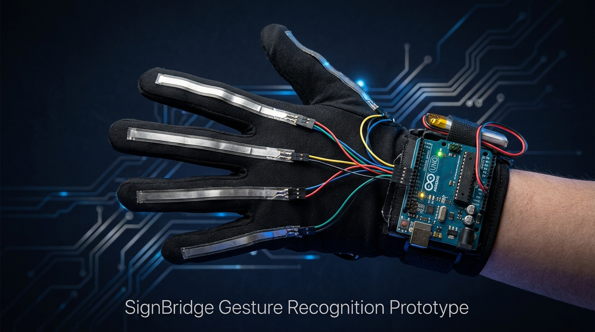

Sign Bridge
by Connectiva Technologies
Sign Language Recognition and Communication System
Real-time voice-to-text • Designed for Deaf Individuals
by Connectiva Technologies
Sign Language Recognition • Communication System
by Connectiva Technologies
Sign Language Recognition and Communication System
Real-time voice-to-text • Designed for Deaf Individuals
We are sincerely grateful for your trust in our product. Sign Bridge was built with deep respect and consideration for the deaf community, and it is our honor to be part of your daily communication. Your support means the world to our team at Connectiva Technologies.
We kindly ask that you treat this tool with care — it was made for you, with heart. Should you have any concerns or feedback, please do not hesitate to reach out. We are always here to help.
Sign Bridge pairs with our custom-built smart glove — a 5-sensor flex matrix engineered to recognize sign language gestures with precision.

Meet the passionate team behind Sign Bridge — students of Connectiva Technologies who turned an idea into a life-changing assistive technology.
Connectiva Technologies is a student-led business proposal dedicated to bridging the communication gap between the deaf and hearing communities. Our team designed Sign Bridge as a capstone project with a mission: to build assistive technology that is accessible, dignified, and life-changing.
We believe every person deserves to be heard and understood — and with Sign Bridge, we take that belief one step closer to reality.